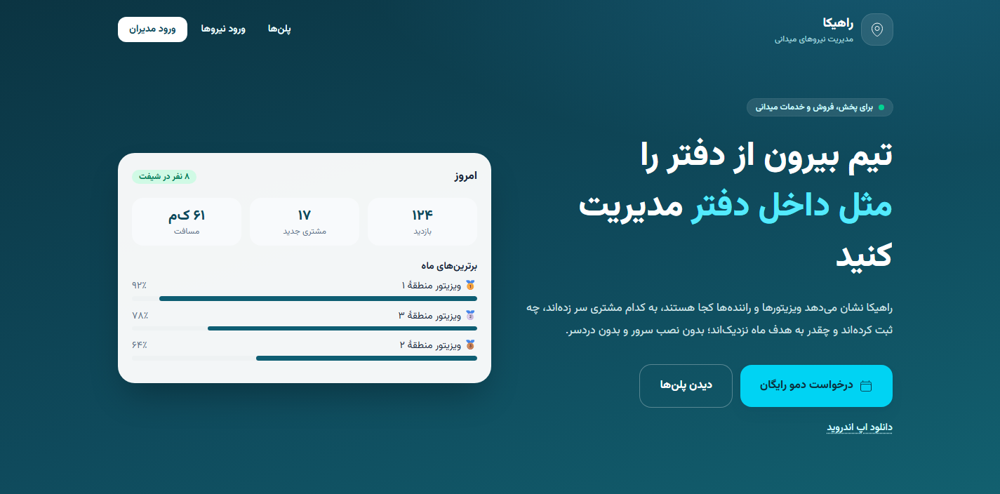

دو اپ اندروید برای دو نقش
اپ فروشنده و اپ راننده با Kotlin و Jetpack Compose ساخته شدهاند. هرکدام فایل نصب
و صفحهٔ اصلی خودش را دارد. هر دو از یک سرویس مشترک برای ثبت موقعیت در طول شیفت استفاده میکنند.
اپ فروشنده
- ثبتنام و ورود با شماره موبایل، شروع/پایان شیفت با یک دکمه و تایمر زنده
- ثبت موقعیت در پسزمینهٔ اندروید، حتی وقتی صفحهٔ گوشی خاموش است
- نگهداری نقاط مسیر روی گوشی هنگام قطع اینترنت و ارسال آنها بعد از اتصال
- فیلتر هوشمند نویز GPS: حذف نقاط کمدقت، پرشهای غیرواقعی و نقاط تکراری
- ثبت فروشگاه در موقعیت فعلی، مدیریت و مسیریابی به فروشگاهها روی نقشه
- تشخیص خودکار بازدید هنگام نزدیکی (≤۱۰۰ متر) و هشدار خروج از محدودهی مجاز
- نمایش زندهی درصد پوشش محدودهی روز و تاریخچهی شیفتها
اپ راننده
راننده فهرست تحویلهای روز و مسیر پیشنهادی را روی گوشی میبیند. در هر توقف،
تحویل سفارش را ثبت میکند یا دلیل تحویلنشدن آن را برای تیم پخش مینویسد.
پنل مدیریت
- نقشهی زندهی همهی فروشندگان (سبز = در حال کار) و آمار شیفتها و مسافت روز
- بازپخش مسیر هر شیفت نقطهبهنقطه با اسلایدر زمان
- Geofencing: تعریف محدوده با رسم چندضلعی/دایره و اختصاص آن به هر فروشنده برای هر روز
- هشدار لحظهای خروج از محدوده (مارکر قرمز + زنگ + اعلان WebSocket)
- گزارش PDF روزانهی فارسی و راستچین (با فونت وزیرمتن) شامل مسیر هر شیفت روی نقشه
- گزارش فروشگاههای هر شیفت: جدید ثبتشده، بازدیدشده و بازدیدنشده + ویرایش/حذف فروشگاه
- صفحهی «همه فروشگاهها» گروهبندیشده به تفکیک فروشنده با وضعیت بازدید در روز انتخابی
ویژگیهای فنی
- Broadcasting لحظهای با Laravel Reverb / WebSocket
- Service Worker برای نصب PWA و همگامسازی پسزمینه
- نقشهی تعاملی با رسم محدوده، بازپخش مسیر و محاسبهی پوشش شبکهای
- تولید PDF فارسی سمت سرور با فونت جاسازیشده